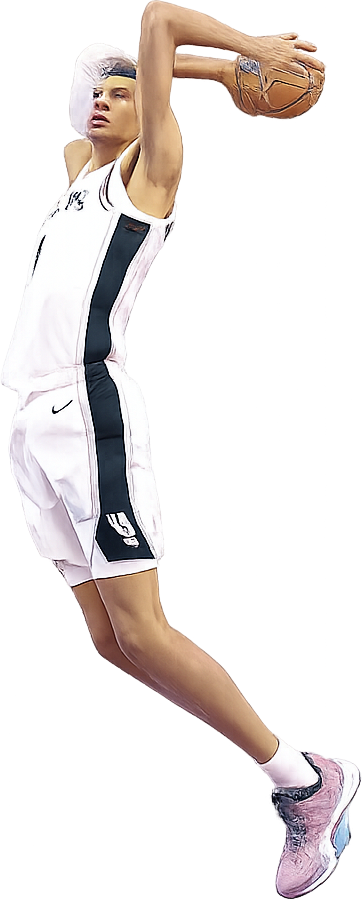

About
Volunteering at a youth homeless facility for years taught me process is just as important as results in the context of on-the-ground service.
My word of 2026 is process. I understand the importance of data-driven results, but believe that we get so overcome by the desire to achieve we forget what it takes to get there. For example, What does it mean to show up for a community? I've showed up in my community in different ways throughout the years, and the most important thing I've taken with me is my commitment to process: while volunteering at Star House, helping students learn to write better, and teaching toddlers English, it really was the friends I made along the way. When process becomes just as valuable as numbers, steady work and compassion take the place of rushed jobs and checking boxes.
I'm conversational in French, trained to think critically, and my undergraduate thesis was on religious druids (ask me about it sometime). After getting back from teaching abroad and starting to grow new roots in the US, I've become interested in the intersection of service, culture, and AI.
As a lover of writing and culture, AI was always posed as a threat to me in undergrad. After learning more about Claude through Anthropic's courses, I realized AI isn't inherently bad; and as a human being with a phone, I understand its inevitability. What I want to better understand through Claude Corps is how we can use AI to interrogate current nonprofit practices and push service to heights its never before been.
Outside of work — climbing, hiking, exploring, volunteering
A timeline of service & work
Follow the dotted links for the whole story!
Featured work
VP of Internal Affairs, Pass the Class — Columbus, OH
Volunteered weekly at Star House, a drop-in center for youth experiencing homelessness, from January 2022 through 2024, logging 44.5 hours across 28 sessions with more than 20 different students. The work ranged from job applications and FAFSA forms to college applications, GED practice tests, and homework help; however, one of the most important things we did at Star House was drop assumptions, sit, and listen.
In 2023 I stepped into VP of Internal Affairs, hoping to grow our volunteer base. I reached out to more than 40 students and recruited 10 new full-time volunteers, keeping all 12 weekly tutoring slots staffed to maintain a positive relationship with Star House staff and consistency for the youth who went. If Pass the Class was gonna be one thing, it had to be consistent.
English Language Assistant, France Education International — Paris, France
Coordinated weekly English lessons across 17 K-5 classrooms, working directly with French teachers who spoke limited English. I built more than 10 bilingual, side-by-side English/French lesson decks that involved grammar comparisons, vocabulary units, and culture lessons introducing American traditions like March Madness or football. Brought picture books with me from the states to read to younger kids (i.e., The Very Hungry Caterpillar).
*The hardest part of teaching in France for me was students' fear of being wrong, out loud, in front of everyone. To combat this, I spoke in French often to show them that speaking in a different language is scary, but awesome, and I tried to make the powerpoints fun and relatable. See sample lesson slides and a classroom photo →
Writing Associate, Center for the Study of Writing — Columbus, OH
Spent two and a half years as a writing TA for 1-2 professors a semester, giving 25+ students 1:1 feedback on 3–5 page papers and running weekly modules that targeted the one or two grammatical or stylistic habits holding a student back. Students who worked with me consistently picked up extra credit points and learned how to convey their ideas more clearly.
Director of Inclusion & Belonging, Student-Alumni Council — Columbus, OH
Co-founded SAC's DEI committee, leading a 9-person team that built recurring programming and created 8 new leadership positions within the organization. Managed 3 program coordinators and helped run event-consulting sessions that caused accessibility and cultural calendars to be required conversations before any event. Also helped create biweekly newsletters encouraging SAC members to explore local Columbus spots, check-in on important worldwide events, and think critically about how we could better impact our communuity.
Freelance Writer, mph.bank — Dayton, OH
Took unfamiliar, jargon-heavy banking topics and turned them into clear, well-sourced articles for a younger audience. Worked with an editor through weekly rounds of feedback, learning to write with journalistic discipline: tight, accurate, and built for readers who've never encountered the topic before. Hopefully now they make cents!
Read the published piece: “What's the Difference Between Traditional and Online Banking?” →
Front Desk Associate & Climbing Instructor, Outdoor Adventure Center — Columbus, OH
Managed check-in operations for 50+ visitors per shift while delivering 8+ safety orientations to groups of varying sizes, making sure every climber left with the knowledge and collaboration skills to keep themselves and their partners safe on the wall. Showing up with a smile and putting in the effort to make our gym a fun place earned me an “outstanding” customer service rating and became something that lifted morale for staff and climbers alike.
Case study
What happens when you find your passion, lean on your support systems, and don't stop calling even after the line goes dead.
I cheered at my high school. One night, cleaning up the bleachers after a game, I noticed how much plastic we'd gone through and that there wasn't a recycling bin anywhere in sight. This became the seed of my idea.
I was already involved in Student Council and eventually became a Board of Education Representative, so I had a wonderful network of support to explore my new potential recycling initiative. After discussing with my stuco advisor, he suggested I bring my idea to the principal, who sent me to the janitor. The janitor's answer was that the real obstacle wasn't willingness, it was sorting: recycling only works if someone's actually separating it out. From there it was months of back-and-forth, which included calls with waste management, conversations with Centerville teachers and parents, repeat conversations with the principal and the janitor, more calls, and most often, more waiting.
By junior year, the bins finally got ordered. We put them at the stadiums, in every classroom, and in the cafeterias. To help with the sorting issue, we printed infographics for the students. In my mind, just one plastic water bottle recycled can make an impact, so it's incredible to see that impact recycled now, over and over again.
Still running today! My younger sister goes to the same school so I still see the bins in action at games.
France — sample lesson materials
Chosen to show that like Michael B. Jordan in Sinners, I can wear multiple hats depending on my students' wants, needs, and learning goals.
Using the way French was taught to me to help the students learn English; unlearning gender roles was especially difficult for my French students. Their determination to grasp these rules that I struggled to grasp at twice their age was astonishing.
Because March Madness was happening at the time and I knew my kids loved sports, I chose to attempt to explain bracket-making and the different basketball teams. The best part for my students was without a doubt the mascots.
Fun fact: Victor Wembanyama went to one of the schools I taught at, so they already loved basketball.

My students were from all different parts of the world, so they wanted to learn about how to discuss their nationalities in English. In class once, we sang happy birthday in six languages--one of my favorite moments being abroad.
Skills
Certificates
Education
Columbus, OH · May 2025
B.A. in Comparative Cultural Studies
B.A. in French & Francophone Studies